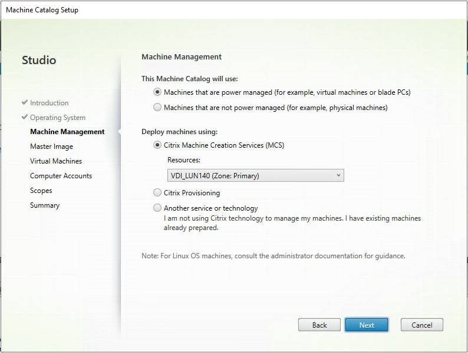
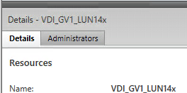
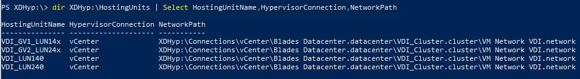
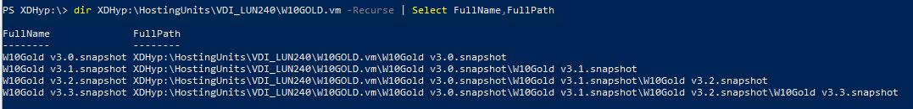

Disclaimer: before moving forward, I have to warn you: the following article is not entirely suitable for Public Cloud Providers. There are some specific parameters (such as the VM instance, Network Service Group and so on) that I am not able to test as I don’t have access to Public Clouds. You may follow this article but you’ll have to dig a bit when you’ll create your ProvScheme.
During my journey to migrate a site from 7.15 to 1912, I had to re-create my catalogs (some statics, some randoms using MCS) in PowerShell.
When you have a couple of catalogs, you can safely do it manually but when you have a lot of them, you’ll be safer to do so with some automation. Actually, there is a lot more properties and pre-requisites than I expected.
In fact, almost half of the following steps in the GUI when creating a catalog is a dedicated PowerShell command.

The easy way to find how to create a catalog is, of course, to do so manually and then check in the PowerShell tab of your Citrix site. All of the commands are not necessary (Citrix likes to add logs, variables, and so on) but you’ll get the ones you have to use.
Alright, that’s it. Thank you, folks!
…
Nah, I’m kidding.
I have to say, the way Citrix is doing it, it is not that clear. They refer to object by UID, or they create variables but never call them. It is more like a treasure map and you have to decrypt the message to find the path to the golden chest.
You’d expect the Citrix SDK for 1912 (or any other version) to fill the gaps, right? Well, so did I.
I started with the New-BrokerCatalog command. Very detailed. About the command itself. You have all the parameters, if it is required, the type of the parameter (boolean, list of objects). You even have the related commands. Sort of.
You know, if you do some PowerShell, when you have a New-Something, more likely you have Set-Something, Get-Something and, sometimes Add-Something. Yep, you guessed it. These are the related commands.
You are creating an MCS catalog, which has some pre-requisites (remember the GUI when you select a hosting resource, a VM snapshot and so on). None of this is highlighted in Citrix SDK. None.
But hey, this is normal, you’re here to create a catalog. Not a Provisioning Scheme!
It’s one of the starting points for the war between Developers and Sysadmins. Yeah, I want to create a catalog. An entire catalog. Not an empty shell (shell, powershell, you have it?).
So, back to the treasure map then. Or… maybe someone has already written an article about this.
Lucky you!
Before starting, I expect you already have configured your hosting platform (VMWare, XenServer, Hyper-V, it doesn’t matter), as well as the resources (network, storage). It is a pre-requisite when you do an MCS catalog. It is not necessary for a static one because it is all about adding static machines to a simple catalog. In that case, Citrix SDK would have been enough.
But in our case, we have work to do, so, let’s go!
First, we have to create an Identity Pool Name. The parameters you need are:
- IdentityPoolName: the name of your identity pool, to easily identify it
- NamingScheme: how you want to name the machine, using # to increment the name (minimum number of # is 2, maximum is 15)
- NamingSchemeType: numeric of alphabetic
- OU: where to add the machine in your Active Directory
- Domain: your domain
There are other parameters (like StartCount to start the naming scheme at a specific point, 42 for instance or abc). I let you check in the documentation if you want to add anything more to your IdentityPoolName.
If you stick to the ones I described, your command would look like this:
New-AcctIdentityPool -IdentityPoolName "VDI-IdentityPoolName" -NamingScheme "VDI###" -NamingSchemeType "Numeric" -OU "OU=VDI,OU=Citrix,DC=lab,DC=local" -Domain "lab.local"
In the GUI, it is one of the last steps. Here, we cannot move forward without it, because we have to link the IdentityPoolName to the Provisioning Scheme. This is a mandatory parameter for New-ProvScheme.
Now we have set how to name the machines, we have to set where to host them. It is called the provisioning scheme. In the GUI, it is called the “machine management”, where you specify if it is an MCS/PVS or a static catalog, and where to store it.
The parameters you need for New-ProvScheme are:
- ProvisioningSchemeName: the name of your Provisioning Scheme, to easily identify it
- IdentityPoolName: the Identity Pool you want to use to name the machine, more likely the one you just created!
- HostingUnitName: where to store the machine, I’ll explain you how to find it
- MasterImageVM: Your VM snapshot to start from, here again, I’ll explain to how to find it
- VMCpuCount: specify the number of CPU of your machines
- VMMemoryMB: the amount of memory of your machines (in Mb)
- CleanOnBoot: read-only VM of not. You specify -CleanOnBoot if you want the machine to be reset at each reboot, nothing if you want to create a persistent clone
- UsePersonalVDiskStorage: if you want to use a Personnal Vdisk to store user’s data
- UseWriteBackCache: enable the cache, you have to specify WriteBackCacheDiskSize (in Gb) and WriteBackCacheMemorySize (in Mb) if you do so
There is, again, other parameters. I let you check in the documentation if you want to add anything more to your ProvScheme.
To identify your HostingUnitName, you can refer to Hosting menu in Citrix Studio and use the resource’s name:

Or use Powershell:
dir XDHyp:\HostingUnits | Select HostingUnitName,HypervisorConnection,NetworkPath
You should get something like this:

Simply copy the HostingUnitName you want to store your machine to.
To identify your MasterImageVM, either you perfectly know where it is stored, named and how you called the snapshot you want to use (as well as the previous ones if there is because they are part of the path…).
Or in Powershell:
dir XDHyp:\HostingUnits\<hostingUnitName>\<yourmasterimage>.vm | Select FullName,FullPath #where hostingunitname is where your VM is store, yourmasterimage the name of your VM
You should get something like this:

Simply copy the FullPath of the snapshot you want to use.
And then, you can create your Provisioning Scheme (replace HostingUnitName and MasterImageVM with the values you copied, I use CleanOnBoot and well as WriteBackCache parameters for the example):
New-ProvScheme -ProvisioningSchemeName "Windows 10 VDI" -IdentityPoolName "VDI-IdentityPoolName" -HostingUnitName "VDI_LUN140" -MasterImageVM "XDHyp:\HostingUnits\VDI_LUN240\W10GOLD.vm\W10Gold v3.0.snapshot\W10Gold v3.1.snapshot" -VMCpuCount 4 -VMMemoryMB 6144 -CleanOnBoot -UseWriteBackCache -WriteBackCacheDiskSize 16 -WriteBackCacheMemorySize 512
This command may take several minutes to complete because it will clone your snapshot to a temporary VM, un-personalized the machine, and then copy the VM disk on each datastore that is part of your hosting units. Depending on their number and your datastore storage speed, it may be longer.
Finally, we can create our catalog. The parameters you for New-BrokerCatalog are:
- Name: the name of your Catalog, to easily identify it
- AllocationType: static or random machines
- Description: to… describe your machine catalog?
- ProvisioningType: manual, PVS or MCS
- SessionSupport: singlesession or multisession
- PersistUserChanges: if the user’s data persist on the machine or are dropped
- ProvisioningSchemeId: the ID of your Provisioning Scheme (Yeah, I agree, it would have been easier to use the ProvisioningSchemeName)
There is, again, other parameters. I let you check in the documentation if you want to add anything more to your Catalog.
To get back your ProvisioningSchemeId, in Powershell:
$myProvSchemeID = (Get-ProvScheme -ProvisioningSchemeName "Windows 10 VDI").ProvisioningSchemeID
If you stick to the ones I described, your command would look like this:
New-BrokerCatalog -Name "Windows 10 VDI" -Description "Windows 10 VDI from P3X-439"- -AllocationType "random" -ProvisioningType "MCS" -SessionSupport "SingleSession" -PersistUserChanges "Discard" -ProvisioningSchemeId $myProvSchemeID
And that’s it! Welcome to our newly created catalog!
But, wait, there is no machine created, yet!
You are right. It’s a couple a click away.. or in the next article (spoiler alert, it is not just one Powershell command)!